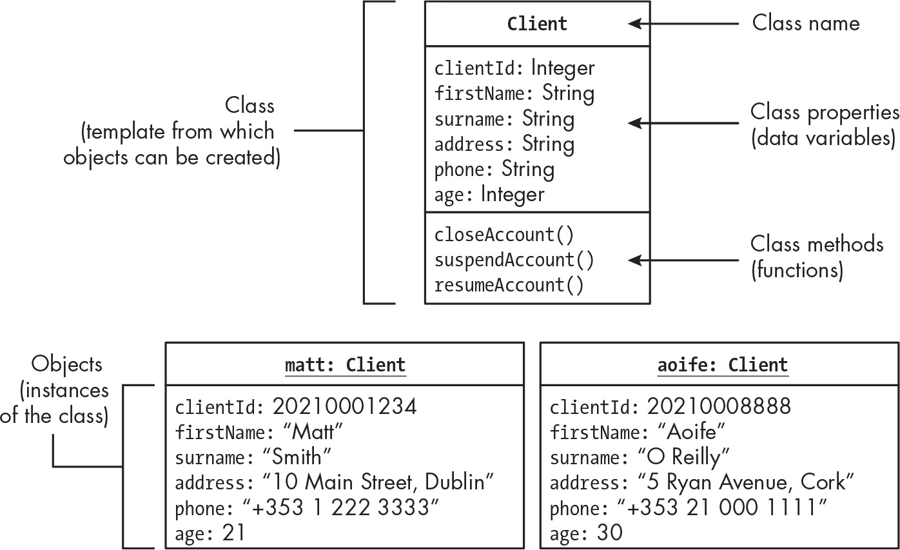
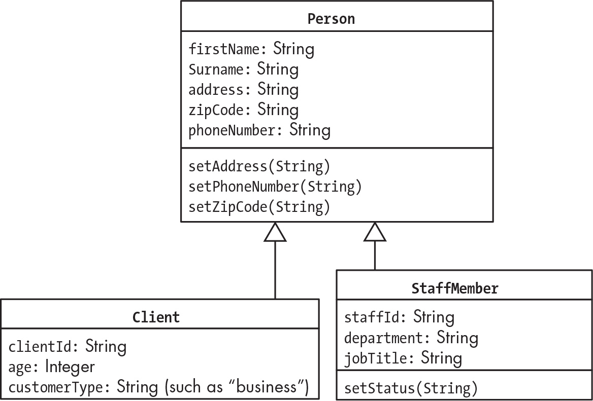
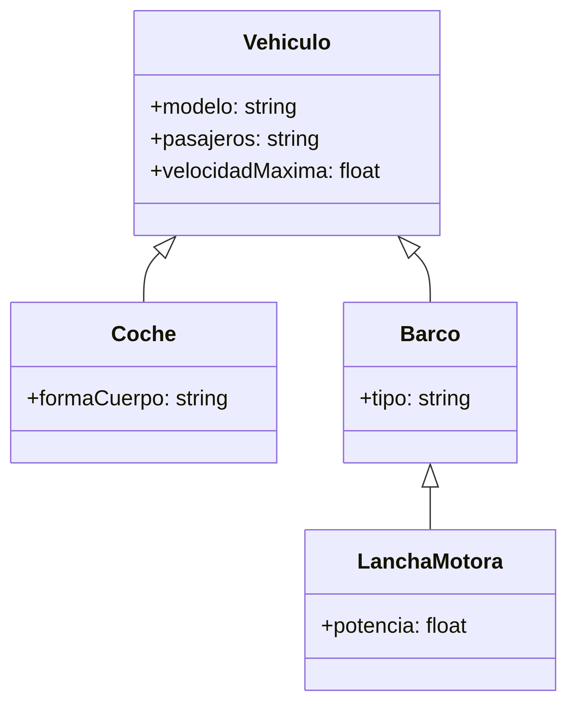

Un programa orientado a objetos está hecho de archivos PHP que declaran clases. Una clase se puede ver como una plantilla donde se crean los objetos. Declarar una clase en PHP realmente no hace nada por sí solo.
Hay gente que se refiere a un objeto como a una “instancia” de una clase, ya que cada objeto es una manifestación de las características y comportamientos que están definidos por la clase. Podemos decir que “objeto” e “instancia” son sinónimos; un objeto en la memoria del ordenador que se ha creado de una plantilla (la clase), con unos valores y una capacidad de responder y ejecutar funciones.

Ejemplo del libro PHP Crash Course de O’Reilly
Las variables definidas dentro de la clase son propiedades. Las funciones declaradas dentro de la clase se llaman métodos. Todo en conjunto se llama miembro.
En ese ejemplo, cada objeto creado de la clase “Cliente” tiene sus propias propiedades pero tienen acceso a sus mismos métodos que están definidos en la Clase.
Con la POO podemos crear relaciones entre objetos simplemente vinculando una propiedad de un objeto con otro objeto. Se suelen relacionar objetos de la misma clase. Por ejemplo, si una persona es padre de otra persona.
Para evitar que se puedan editar los datos al gusto, podemos usar
public, private, o protected para
declarar distintos tipos de acceso a las propiedades y métodos de una
clase de objetos. Si queremos que no se pueda editar la edad del cliente
haciendola privada, podemos declarar un método setAge()
para actualizar la edad sólo si se cumplen algunos requisitos de
validación.
Podemos asignar propiedades y métodos que son comunes entre clases a una superclase. Una superclase seria una clase generalizada de donde otras clases pueden sacar características.

Ejemplo del libro PHP Crash Course de O’Reilly
Las superclases y la herencia permiten que no tengamos que duplicar código entre clases.
En PHP, si queremos reemplazar un método símplemente tenemos que declarar otra vez el método en la subclase para reemplazarlo.
El flujo de control en un PHP procedural normalmente se lleva
mediante un controlador index.php, donde cuando se recibe
una petición HTTP, se ejecuta lo que se encuentre en ese archivo.
En una aplicación orientada a objetos, se mantiene el
index.php, pero tenemos que crear el objeto de la
aplicación principal.
<?php
// Declaramos la clase Player
class Player
{
private string $name; // Propiedad: NOMBRE
private int $highScore = 0; // Propiedad: PuntuacionAlta
/* Por defecto highScore es 0 */
public function setName(string $name)
/*
Función para cambiar el nombre, ya que el
string es privado
*/
{
$this->name = $name; // Se cambia el name del objeto a $name
}
public function setHighScore(int $newScore)
/*
Función para cambiar la puntuación alta, ya
que es privada
*/
{
if ($newScore > $this->highScore) {
$this->highScore = $newScore; // Se cambia el highScore del objeto a $newScore
}
}
}
/*
`$this` se refiere al objeto desde el que se ha llamado al método
*/Una declaración de clase define las propiedades que cada objeto de la clase va a tener y los métodos que podrán funcionar con cada una de las propiedades.
La clase también establece las relaciones que puede tener con otras clases (herencia).
Las clases se guardan en archivos PHP en el directorio del proyecto. Lo suyo es declarar las clases en archivos separados, es decir, si tenemos 3 clases, lo guardamos en 3 archivos distintos.
Para definir las clases, siempre se empieza por una mayúscula y sin
espacios. Persona, Animal,
Centro, etc.
<?php
# -- producto.php --
class Producto
{
public string $nombre;
public string $precio = 0;
}Queremos que el objeto de precio tenga un valor por defecto de 0, por lo que le podemos asignar a la propiedad un valor en la declaración de la clase, como he hecho.
Para crear un objeto de una clase, usamos la palabra new
seguida del nombre de la clase.
<?php
$producto1 = new Producto();
$producto1->nombre = "bolsa";
?>Usando new Producto creamos el nuevo objeto y devolvemos
una referencia a él que guardamos en la variable
$producto1.
$producto1 no contiene el objeto ni la copia, sólo tiene
la referencia al objeto creada en la memoria del ordenador. Con
-> nos referimos a la propiedad del objeto
Cuando se declara como private, no se pueden acceder por
código fuera de la declaración de la clase, pero sí son accesibles por
los métodos. Con eso podemos reducir el riesgo de introducir propiedades
inválidas.
La visibilidad por defecto en los miembros de la clase es
public si no se declara nada, aunque es buena práctica usar
el public cuando se quiere decir que es público. Para
hacerlo privado usamos private.
En casi todos los lenguajes de POO, se suelen usar los “getter” y
“setter”, que son métodos que sacan (get) o establecen (set)
información. Las propiedades según eso deberían ser como
getName(), setAge(). Para booleanos, es mejor
usar is, como isPropertyName en vez de
getPropertyName.
Cuando se crean métodos, hay que tener en cuenta que se van a ejecutar los mismos métodos en 0, 1, o miles de objetos, por lo que hay que tener en cuenta eso. Las clases que están bien escritas se pueden reusar.
Hay editores como PHPStorm que te crean los getter y setter
El método __construct es un método especial que se
ejecuta automáticamente cuando se crea un nuevo objeto de la clase. Se
suele usar para inicializar las propiedades del objeto con valores
específicos.
<?php
class Producto
{
public string $nombre;
public string $precio = 0;
public function __construct(string $nombre, string $precio)
{
$this->nombre = $nombre;
$this->precio = $precio;
}
}En este ejemplo, el método __construct toma dos
parámetros, $nombre y $precio, y los asigna a
las propiedades del objeto usando $this->. Cuando se
crea un nuevo objeto de la clase Producto, se pueden pasar
los valores para el nombre y el precio directamente al constructor:
$producto1 = new Producto("bolsa", "10");Esto creará un nuevo objeto Producto con el nombre
“bolsa” y el precio “10”. El método __construct es una
forma conveniente de asegurarse de que los objetos se inicializan
correctamente con los valores necesarios desde el momento en que se
crean.
No tenemos que implementar una función _toString() para
cada clase, pero tenemos que si necesitamos cosas más complejas a lo
mejor habrá que hacerlo.
<?php
print $producto1Permite que una o más clases (llamadas subclases) puedan tener las mismas propiedades o métodos que otra clase llamada “superclase”.
La herencia simplifica el código al identificar y generalizar las propiedades y métodos comunes a varias clases y colocarlos en una superclase.
<?php
class Vehiculo
{
public string $modelo;
public string $pasajeros;
public float $velocidadMaxima;
}Aquí la clase Vehículo es una clase que tiene propiedades comunes a muchos tipos de vehículos. Podemos crear subclases que hereden de esta clase para representar tipos específicos de vehículos, como coches, motos, camiones, etc.
class Coche extends Vehiculo
{
public string $formaCuerpo;
}Ahora podemos crear un objeto cohce y darle los valores para cada una de sus propiedades, las definidas en Coche y las que vienen de la subclase Coche.
$coche1 = new Coche();
$coche1->formaCuerpo='Sedan';
$coche1->modelo='Ford Mustang';
$coche1->pasajeros=5;
$coche1->velocidadMaxima=160;Aqui dejo un esquema Mermaid de como podemos representar la herencia entre clases. Se puede ver que la clase Coche hereda las propiedades de la clase Vehiculo, y además tiene su propia propiedad formaCuerpo. También barco hereda de vehículo y lanchaMotora hereda de barco, por lo que lanchaMotora también hereda las propiedades de vehículo.

Cuando un método o propiedad se declara protected, se
convierte accesible para cualquier subclase de la clase en la que se ha
declarado, pero no es accesible desde fuera de la clase o sus subclases.
Esto permite que las subclases puedan usar y modificar los métodos y
propiedades protegidos de la superclase, pero evita que el código
externo pueda acceder a ellos directamente.
Es más restrictiva que pública, pero menos restrictiva que privada. Es útil para permitir que las subclases tengan acceso a ciertos métodos o propiedades sin exponerlos al código externo.
<?php
class Vehiculo
{
protected string $modelo;
protected string $pasajeros;
protected float $velocidadMaxima;
}En este ejemplo, las propiedades modelo,
pasajeros y velocidadMaxima son protegidas, lo
que significa que solo pueden ser accedidas por la clase
Vehiculo y sus subclases, como Coche. El
código externo no podrá acceder a estas propiedades directamente, pero
las subclases podrán usarlas y modificarlas según sea necesario.
Mantener la propiedad private en vez de
protected o public es una buena práctica para
encapsular los datos y proteger la integridad de los objetos, ya que
evita que el código externo pueda modificar directamente las propiedades
del objeto sin pasar por métodos de acceso controlados. Esto ayuda a
mantener la consistencia y seguridad de los datos dentro de la
clase.
Una clase abstracta es aquella que no se va a usar nunca para crear
objetos directamente. Se declaran para ser usadas como superclases de
otras clases. Por ejemplo, la clase Vehiculo podría ser una
clase abstracta, ya que no tiene sentido crear un objeto de tipo
Vehiculo directamente, sino que se usaría como base para
crear objetos de tipo Coche, Barco, etc.
En este diagrama, Vehiculo es una clase abstracta que no
se puede instanciar directamente, pero sirve como base para las clases
Coche, Barco y LanchaMotora, que
heredan sus propiedades y pueden ser instanciadas para crear objetos
específicos de cada tipo de vehículo.
En vez de poner class Vehicle, como no vamos a declarar
objetos de tipo Vehiculo, podemos poner
abstract class Vehiculo para indicar que es una clase
abstracta. Esto hace que el código sea más claro y evita que se puedan
crear objetos de tipo Vehiculo por error.
<?php
abstract class Vehiculo
{
protected string $modelo;
protected string $pasajeros;
protected float $velocidadMaxima;
}Ahora, si intentamos crear un objeto de la clase
Vehiculo, nos dará un error.
Fatal error: Uncaught Error: Cannot instantiate abstract class Vehiculo in ...En algunos casos podríamos necesirtar cambiar cómo un método heredado funciona en la subclase. Para eso, lo tenemos que reemplazar. Sólo se hace definiendo el método directamente en la subclase y dándole el mismo nombre que el método heredado de la superclase.
<?php
class Vehiculo
{
protected string $modelo;
protected string $pasajeros;
protected float $velocidadMaxima;
public function acelerar()
{
echo "El vehículo está acelerando a su velocidad máxima de " . $this->velocidadMaxima . " km/h.";
}
}
class Coche extends Vehiculo
{
public string $formaCuerpo;
public function acelerar()
{
echo "El coche " . $this->modelo . " está acelerando a su velocidad máxima de " . $this->velocidadMaxima . " km/h.";
}
}En este ejemplo, la clase Coche reemplaza el método
acelerar() heredado de la clase Vehiculo con
su implementación específica adaptada para ESA clase.
A veces, en vez de reemplazarlo entero, sólo queremos añadir algo al
método heredado. Para eso, podemos usar la palabra clave
parent para llamar al método de la superclase dentro del
método de la subclase.
<?php
class Coche extends Vehiculo
{
public string $formaCuerpo;
public function acelerar()
{ parent::acelerar(); // Llama al método acelerar() de la superclase Vehiculo
echo "¡El coche está acelerando!";
}
}Aqui el método acelerar() de la clase Coche se ejecuta
primero gracias al parent::acelerar(), que llama al método
acelerar() de la clase Vehiculo, y luego se
ejecuta el código adicional que imprime “¡El coche está
acelerando!”.
En vez de usar parent:: para acceder al método de una
superclase, nos podemos referir a la superclase por su nombre. En este
caso, sería Coche::.
<?php
class Coche extends Vehiculo
{
public string $formaCuerpo;
public function acelerar()
{ Coche::acelerar(); // Llama al método acelerar() de la superclase Vehiculo
echo "¡El coche está acelerando!";
}
}En este caso, Coche::acelerar() también llama al método
acelerar() de la clase Coche, pero usando el
nombre de la clase en lugar de parent.
Normalmente se usa para crear constructores en subclases que llaman al constructor de la superclase para asegurarse de que las propiedades heredadas se inicializan correctamente.
<?php
class Coche extends Vehiculo
{
public string $formaCuerpo;
public function __construct(string $modelo, string $pasajeros, float $velocidadMaxima, string $formaCuerpo)
{
parent::__construct($modelo, $pasajeros, $velocidadMaxima);
$this->formaCuerpo = $formaCuerpo;
}
}En algunas situaciones, podemos no querer que una subclase se cree a
partir de una clase que hemos declarado. Para eso, podemos declarar la
clase con la palabra final, que indica que esa es la clase
FINAL y no se pueden crear subclases a partir de ella.
<?php
final class Coche extends Vehiculo
{
public string $formaCuerpo;
}Lo suyo es sólo declarar clases o métodos como final si
realmente tenemos una justificación para hacerlo. Por ejemplo, si
tenemos una librería API, podemos declarar algunos métodos como
final para evitar que los usuarios de la API los reemplacen
y rompan la funcionalidad de la API.
Si queremos que un método no se pueda reemplazar en las subclases,
podemos declararlo como final para que las subclasees no
puedan reemplazar los métodos pero permitiendo que se pueda seguir
heredando.
<?php
class Vehiculo
{
protected string $modelo;
protected string $pasajeros;
protected float $velocidadMaxima;
final public function acelerar()
{
echo "El vehículo está acelerando a su velocidad máxima de " . $this->velocidadMaxima . " km/h.";
}
}Aquí, la función acelerar() no se podrá reemplazar en
ninguna subclase de Vehículo. Esto hará que el
funcionamiento de acelerar() sea el mismo en todas las
subclases.
((INTRODUCIR LINK A EJERCICIOS SUBCLASES))
Cuando los proyectos de PHP se van haciendo cada vez más grandes, puede ocurrir que haya una colisión de nombres o tener dos clases con el mismo nombre. Para evitarlo, se usan los namespaces, que es una solución que dan los lenguajes de programación orientados a objetos para evitar la colisión de nombres.
Las colisiones de nombres pueden ocurrir en algunos casos:
Intentar declarar una clase con el mismo nombre a una de las
clases ya existentes del lenguaje de PHP, como Error,
Directory, o Generator.
Intentar declarar dos clases en distintos directorios
Combinar nuestras clases con clases de terceros.
NamespacesSe usan para prevenir colisiones de nombres. Las clases se organizan en espacios de nombres y en subespacios de nombres.
Espacionombre\Subespacio\ClaseEspacionombre sería el espaacio de nombres principal,
Subespacio sería un subespacio dentro del espacio de
nombres, y Clase sería la clase que se encuentra dentro del
subespacio.
Las clases que están en el lenguaje de PHP se encuentran en el espacio de nombres raíz.
Para crear un espacio de nombres, usamos la palabra
namespace seguida del nombre del espacio de nombres que
queremos crear. Por ejemplo:
<?php
namespace Osu;
class Player
{
private string $name;
private int $highScore = 0;
public function setName(string $name)
{
$this->name = $name;
}
public function setHighScore(int $newScore)
{
if ($newScore > $this->highScore) {
$this->highScore = $newScore;
}
}
}Una vez la clase está declarada para estár en el espacio de nombres, tenemos que informar a PHP de que es la clase que queremos usar. Se puede hacer de dos maneras:
new Osu\Player().<?php
require_once 'osu.php';
$player1 = new Osu\Player();use antes de llamar a la
clase para importar el espacio de nombres:use Osu\Player;
require_once 'osu.php';
$player1 = new Player();Cuando se trabaja dentro de un namespace definido, PHP asume que la
clase pertenece siempre al namespace actual. Con \
indicamos el espacio de nombres global (root). Para acceder a clases
integradas de PHP como Datetime desde un archivo con un
namespace, tendremos que usar \Datetime para referenciar la
clase desde el espacio de nombres global.
<?php
namespace Osu;
class Player
{
private string $name;
private int $highScore = 0;
public function getCurrentTime()
{
$currentTime = new \DateTime(); // Referencia a la clase DateTime del espacio de nombres global
return $currentTime->format('Y-m-d H:i:s');
}
}Usar use es como si fuera un alias o importación al
inicio del archivo. Usando use Osu; podemos usar el
namespace de Osu sin tener que escribir Osu\ cada vez que
queramos usar una clase de ese namespace.
<?php
use Osu;
require_once 'osu.php';
$player1 = new Osu\Player();Es un programa de línea de comandos para ayudar con la POO en PHP. Ayuda con las clases y los archivos de declaración de funciones. Facilita trabajar con clases de distintos espaacios de nombres.
(No entro aqui ahora)
(NO entro aqui ahora)
(NO entro aqui ahora)
Las aplicaciones no siempre funcionan como queremos, por eso tenemos que usar excepciones.
Las excepciones son las clases que proporcionan información sobre los errores que ocurren en el programa.